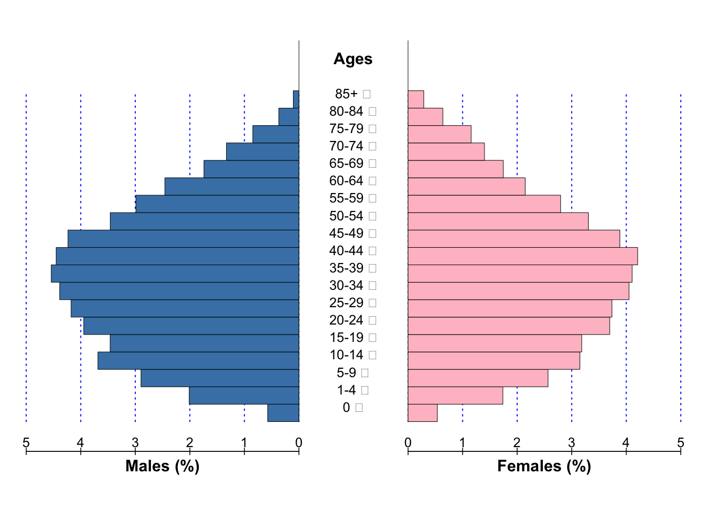
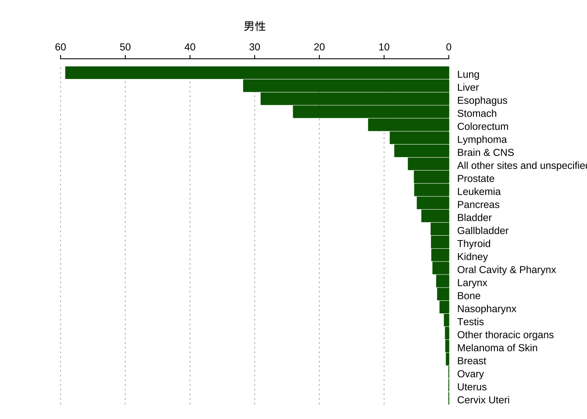
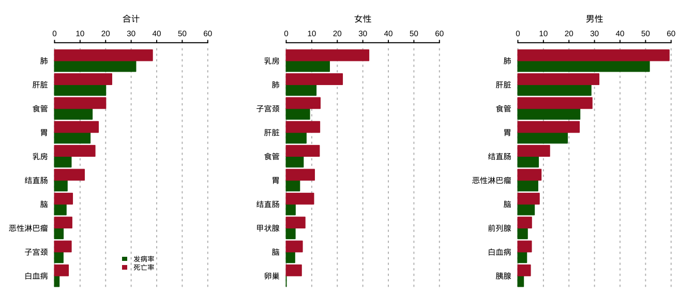

─ Session info ───────────────────────────────────────────────────────────────
setting value
version R version 4.4.2 (2024-10-31)
os macOS Sequoia 15.3.2
system aarch64, darwin20
ui X11
language (EN)
collate en_US.UTF-8
ctype en_US.UTF-8
tz Asia/Shanghai
date 2025-03-28
pandoc 3.6.3 @ /opt/homebrew/bin/ (via rmarkdown)
─ Packages ───────────────────────────────────────────────────────────────────
package * version date (UTC) lib source
cachem 1.1.0 2024-05-16 [1] CRAN (R 4.4.0)
cli 3.6.3 2024-06-21 [1] CRAN (R 4.4.0)
devtools * 2.4.5 2022-10-11 [1] CRAN (R 4.4.0)
digest 0.6.37 2024-08-19 [1] CRAN (R 4.4.1)
ellipsis 0.3.2 2021-04-29 [1] CRAN (R 4.2.0)
evaluate 0.24.0 2024-06-10 [1] CRAN (R 4.4.0)
fastmap 1.2.0 2024-05-15 [1] CRAN (R 4.4.0)
fs 1.6.4 2024-04-25 [1] CRAN (R 4.4.0)
glue 1.8.0 2024-09-30 [1] CRAN (R 4.4.1)
htmltools 0.5.8.1 2024-04-04 [1] CRAN (R 4.4.0)
htmlwidgets 1.6.4 2023-12-06 [1] CRAN (R 4.4.0)
httpuv 1.6.15 2024-03-26 [1] CRAN (R 4.4.0)
jsonlite 1.8.8 2023-12-04 [1] CRAN (R 4.3.1)
knitr 1.48 2024-07-07 [1] CRAN (R 4.4.0)
later 1.3.2 2023-12-06 [1] CRAN (R 4.4.0)
lifecycle 1.0.4 2023-11-07 [1] CRAN (R 4.3.1)
magrittr 2.0.3 2022-03-30 [1] CRAN (R 4.2.0)
memoise 2.0.1 2021-11-26 [1] CRAN (R 4.3.0)
mime 0.12 2021-09-28 [1] CRAN (R 4.2.0)
miniUI 0.1.1.1 2018-05-18 [1] CRAN (R 4.2.2)
pkgbuild 1.4.4 2024-03-17 [1] CRAN (R 4.4.0)
pkgload 1.3.4 2024-01-16 [1] CRAN (R 4.4.0)
profvis 0.3.8 2023-05-02 [1] CRAN (R 4.3.0)
promises 1.3.0 2024-04-05 [1] CRAN (R 4.4.0)
purrr 1.0.2 2023-08-10 [1] CRAN (R 4.4.0)
R6 2.5.1 2021-08-19 [1] CRAN (R 4.2.0)
Rcpp 1.0.13 2024-07-17 [1] CRAN (R 4.4.0)
remotes 2.5.0 2024-03-17 [1] CRAN (R 4.4.0)
rlang 1.1.4 2024-06-04 [1] CRAN (R 4.4.0)
rmarkdown 2.29 2024-11-04 [1] CRAN (R 4.4.1)
rstudioapi 0.16.0 2024-03-24 [1] CRAN (R 4.4.0)
sessioninfo * 1.2.2 2021-12-06 [1] CRAN (R 4.2.0)
shiny 1.8.1.1 2024-04-02 [1] CRAN (R 4.4.0)
stringi 1.8.4 2024-05-06 [1] CRAN (R 4.4.0)
stringr 1.5.1 2023-11-14 [1] CRAN (R 4.3.1)
urlchecker 1.0.1 2021-11-30 [1] CRAN (R 4.2.0)
usethis * 2.2.3 2024-02-19 [1] CRAN (R 4.4.0)
vctrs 0.6.5 2023-12-01 [1] CRAN (R 4.3.1)
xfun 0.45 2024-06-16 [1] CRAN (R 4.4.0)
xtable 1.8-4 2019-04-21 [1] CRAN (R 4.2.0)
yaml 2.3.9 2024-07-05 [1] CRAN (R 4.4.0)
[1] /Users/qc0824/Library/R
[2] /Library/Frameworks/R.framework/Versions/4.4-arm64/Resources/library
──────────────────────────────────────────────────────────────────────────────R包canregtools：肿瘤登记可视化和自动化报告
促进肿瘤登记数据的分析、可视化和报告流程化
2023年9月30日
肿瘤登记
R语言
canregtools
为了使肿瘤登记数据分析和可视化更加容易，我写了一个R语言软件包“canregtools”，这篇博文将详细介绍这个R包的功能和使用。
R语言包“canregtools”提供了肿瘤登记常规数据分析中常用的数据处理、可视化、自动化报告等功能，该包的主要目的是通过一系列R语言函数功能实现肿瘤登记数据常规数据分析和数据可视化功能，并通过整合不同函数功能从而实现应用于不同场景的肿瘤登记报告，在统一的R语言环境中让肿瘤登记数据分析更流畅。
目前canregtools包还处在开发阶段，新的功能会不断补充更新到该包中，大家可以登陆canregtools包网站了解开发进度和最新功能，如果您有关于该包的建议，请发送邮件给我。
1 canregtools的安装
该包还正处于开发阶段，暂时还没有准备将其提交至CRAN，我们会等其功能稳定之后再考虑将其正式提交。目前代码托管在github上，大家可以通过下面的代码进行安装。
在开始介绍canregtools包之前，首先看看我们包的运行环境。
2 主要功能介绍
该包的主要功能分为以下几类：数据读取、数据整理、指标计算、可视化、表单制作和生成报告等。
3 数据读取
目前该包可以读取国家癌症中心发布的数据上报格式（call for data），包括以EXCEL格式保存的单年数据或生存数据，通过read_canreg()函数来实现。我们在包里内置了按照国家癌症中心数据上报格式准备的excel数据文档(“411721.xls”)。
我们给读入的原始数据定义一个类”canreg”， 我们可以通过class函数查看一下。
4 数据整理
数据整理函数主要为count_canreg()，它可以把读入的class类型为canreg的原始数据整理为各个变量的频数数据，我们给这个频数数据定义了一个类为‘fbswicd’。
这个函数还可以指定一些参数值从而实现对年龄、癌症分类、语言类型使用不同的分类方法。
比如癌症分类方法，我们按照不同解剖学系统进行分类、大类或小类进行分类。
5 统计指标计算
5.1 年龄标化率
计算年龄标化率的函数为ageadjust()，可以基于不同标准人口计算年龄标化率，并基于不同方法估计可信区间。该函数主要有以下参数：
```{r}
#| eval: false
ageadjust(
count, #不同年龄组病例数
pop, #不同年龄组风险人口数
rate = NULL, #不同年龄组发病率
stdpop = NULL, #各年龄组标准人口数
method = "gamma", #估计可信区间的方法，选项为'gamma', 'normal'，'lognormal'
conf_level = 0.95, #设置可信区间水平, 范围为0-1， 0.95则输出95%可信区间
mp = 1e+05
)
```举个具体的例子：
cases <- c(50, 60, 45, 70)
pop <- c(1000, 1200, 1100, 900)
spop <- c(800, 1000, 1100, 900)
ageadjust(cases, pop, stdpop = spop, mp = 100000)$cases
[1] 225
$cr
[1] 5357.143
$cr_var
[1] 1.27551e-05
$cr_lci
[1] 4679.972
$cr_uci
[1] 6104.765
$asr
[1] 5394.737
$asr_var
[1] 1.306556e-05
$asr_lci
[1] 4709.493
$asr_uci
[1] 6154.046这是一个向量化的函数，如果你使用tidyverse进行数据处理时，你可以把他放到mutate或reframe函数内使用。
5.2 基于类canreg或fbswicd计算标化率
我们把数据读入R以后被转换为’canreg’类，我可以直接基于’canreg’数据计算标化率。函数为create_asr()，该函数的参数如下：
```{r}
#| eval: false
create_asr(
x, # 类为canreg或fbswicd的数据
..., #指定输出的分类: year,sex,icd_cat
event = fbs, #指定计算年龄率的变量
pop = rks, # 指定人口数变量
agegrp = agegrp, #指定年龄分组变量
std = c(china, segi), #指定标准人口
mp = 1e+05,
decimal = 2, #输出小数位
show_var = FALSE, #是否输出方差
show_ci = FALSE, #是否输出可信区间
keep_sex_specific = FALSE #是否保留年龄别专属癌种值
)
```基于canreg类数据计算标化率,同时也可以输出0-74岁累积率和35-64岁截缩率。 ::: {.cell}
# A tibble: 56 × 13
year sex cancer site icd10 no_cases cr asr_cn2000 asr_wld85
<int> <fct> <chr> <fct> <chr> <int> <dbl> <dbl> <dbl>
1 2016 男性 101 口腔和咽（除外鼻咽）…… C00-… 13 2.85 2.46 2.73
2 2016 男性 102 鼻咽 C11 7 1.54 1.37 1.16
3 2016 男性 103 食管 C15 157 34.5 29.0 30.6
4 2016 男性 104 胃 C16 135 29.6 24.0 24.9
5 2016 男性 105 结直肠肛门 C18-… 72 15.8 12.4 12.6
6 2016 男性 106 肝脏 C22 180 39.5 31.7 31.8
7 2016 男性 107 胆囊及其他 C23-… 16 3.51 2.74 2.7
8 2016 男性 108 胰腺 C25 27 5.93 4.88 5.03
9 2016 男性 109 喉 C32 11 2.41 1.89 1.78
10 2016 男性 110 气管、支气管、肺 C33-… 320 70.2 59.2 61.0
# ℹ 46 more rows
# ℹ 4 more variables: truncr_cn2000 <dbl>, truncr_wld85 <dbl>, cumur <dbl>,
# prop <dbl>:::
同样，也可以基于fbswicd类数据计算标化率。 ::: {.cell}
# A tibble: 110 × 13
year sex cancer site icd10 no_cases cr asr_cn2000 asr_wld85
<int> <fct> <chr> <fct> <chr> <int> <dbl> <dbl> <dbl>
1 2016 Male 1 Lip C00 0 0 0 0
2 2016 Male 10 Esophagus C15 157 34.5 29.0 30.6
3 2016 Male 11 Stomach C16 135 29.6 24.0 24.9
4 2016 Male 12 Small Intestine C17 3 0.66 0.51 0.55
5 2016 Male 13 Colon C18 33 7.24 5.79 6.1
6 2016 Male 14 Rectum C19-… 38 8.34 6.43 6.36
7 2016 Male 15 Anus C21 1 0.22 0.18 0.16
8 2016 Male 16 Liver C22 180 39.5 31.7 31.8
9 2016 Male 17 Gallbladder and… C23-… 16 3.51 2.74 2.7
10 2016 Male 18 Pancreas C25 27 5.93 4.88 5.03
# ℹ 100 more rows
# ℹ 4 more variables: truncr_cn2000 <dbl>, truncr_wld85 <dbl>, cumur <dbl>,
# prop <dbl>:::
6 数据可视化
6.1 绘制人口金字塔图
绘图函数为draw_pyramid()，该函数的主要功能为绘制一个或多个人口金字塔，用于展示人口数据结构。该函数主要有以下参数：
```{r}
#| eval: false
draw_pyramid(
x, # 类为"canreg"或"fbswicd"的数据
show_value = TRUE, #是否在人口金字塔上显示人口数
show_prop = TRUE, #是否在人口金字塔上显示人口比例
left_axis = NULL, #设置人口金字塔左侧坐标轴值
right_axis = NULL, #设置人口金字塔右侧坐标轴值
axis_fm = "g",
axis_bm = "",
axis_bi = 3,
cgap = 0.3, # 人口金字塔的中间间隔宽度
cstep = 1, # 间隔1个条形显示人口金字塔
csize = 1, #设置字体大小，默认为1
labs = c("Males", "Ages", "Females"), # 设置左中右坐标标签
gl = TRUE, # 是否显示竖型背景条
cadj = 0, # 调整标签位置
cols = c("#006400", "#b32134"), # 设置人口金字塔条颜色
dens = c(-1, -1),
main = "", # 设置人口金字塔图的标题
grid = c(2, 3) #如果绘制多个图，设置显示方式，c(2,3) 设置为2行3列
)
```如果不想显示人口金字塔人口数字可以，设置show_value = FALSE，不显示这些数据。 ::: {.cell}
draw_pyramid(fbsw,
csize = 0.8,
cgap = 0.4,
show_value = FALSE,
cols = c("steelblue", "pink"),
grid = c(1,1))
:::
6.2 绘制条形图
肿瘤登记年报中经常会出现各种各样的条形图，该包通过draw_barchart()来绘制这种类型的图。该函数的参数如下：
library(dplyr)
library(tidyr)
library(showtext)
showtext_auto()
asr <- create_asr(data, event = fbs, sex, cancer) |>
select(sex,cancer,asr_cn2000) |>
filter(!cancer %in% c(60,61)) |>
add_labels(lang="en", label_type = "abbr") |>
pivot_wider(names_from = sex, values_from = asr_cn2000) |>
arrange(M)
draw_bar(list(asr$M),
cates = as.character(asr$site),
bar_side = 1,
label = c("男性","女性"))
```{r}
#| eval: false
draw_barchart(
data, #用于绘图的数据框
plot_var = cr, #用于绘图的变量
cate_var = icd_cat, #分类变量
group_var = year, #分组变量
side_var = sex,
topn = 10,
bar_side = 1,
nrow = 2,
...
)
```library(dplyr)
library(showtext)
showtext_auto()
asr1 <- create_asr(data, event = fbs, sex, cancer) |>
bind_rows(create_asr(data, event = fbs, cancer)) |>
select(sex, cancer, asr_cn2000) |>
mutate(type = "发病率")
asr2 <- create_asr(data, event = sws, sex, cancer) |>
bind_rows(create_asr(data, event = sws, cancer)) |>
select(sex, cancer, asr_cn2000) |>
mutate(type = "死亡率") |>
bind_rows(asr1) |>
drop_total() |>
drop_others() |>
add_labels(label_type = "abbr") |>
mutate(sex=as.character(sex))
draw_barchart(asr2,
plot_var = asr_cn2000,
cate_var = site,
group_var = type,
side_var = sex,
bar_side = 2,
grid = c(1, 3))